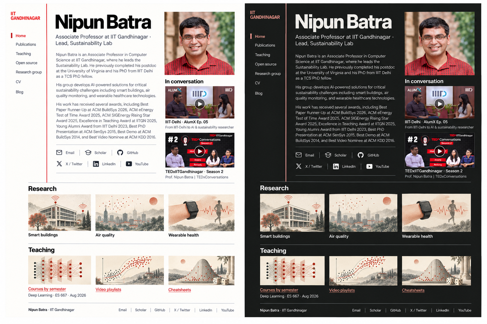
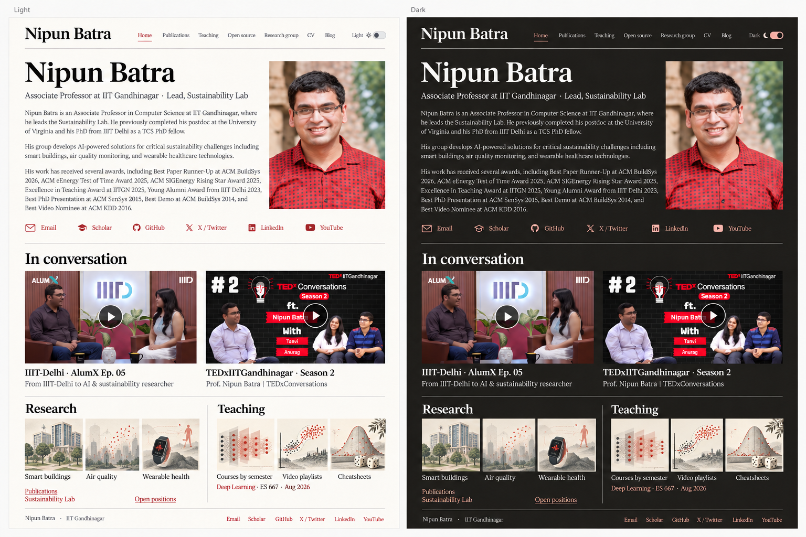
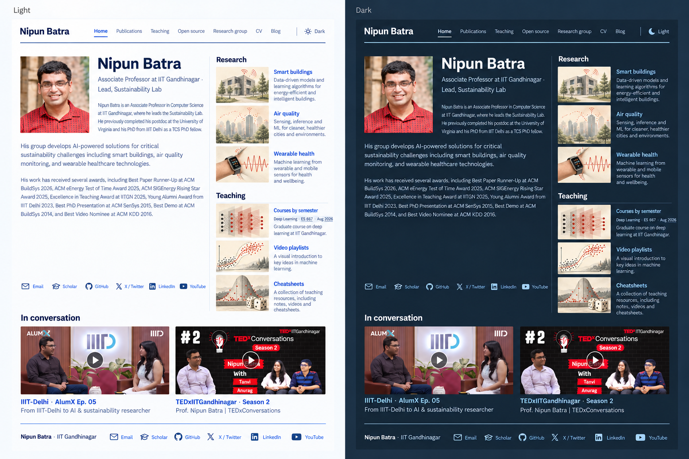
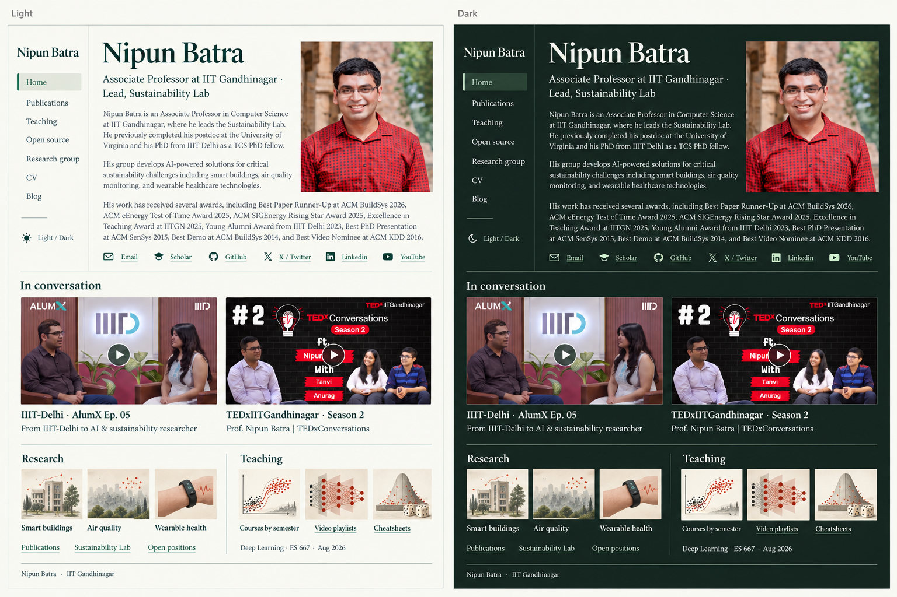

Four homepage concepts
Full biography, both conversations, and illustrations for research and teaching. These are the approved visual references. Compare them with screenshots of the implemented pages, or open a working preview.
See screenshots of all pages · Open the interactive comparison
Swiss red
Try light mode · Try dark mode · Full-size image


Warm editorial
Try light mode · Try dark mode · Full-size image


Scientific index
Try light mode · Try dark mode · Full-size image


Forest notebook
Try light mode · Try dark mode · Full-size image

